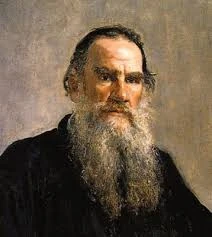
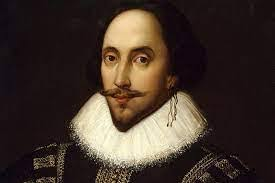
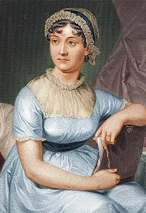
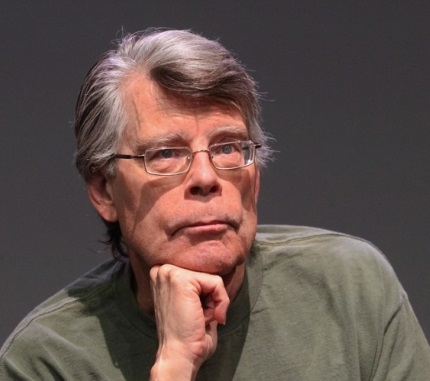
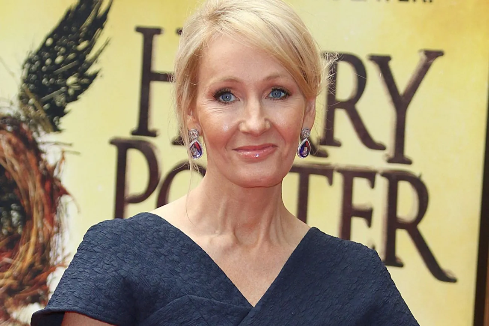
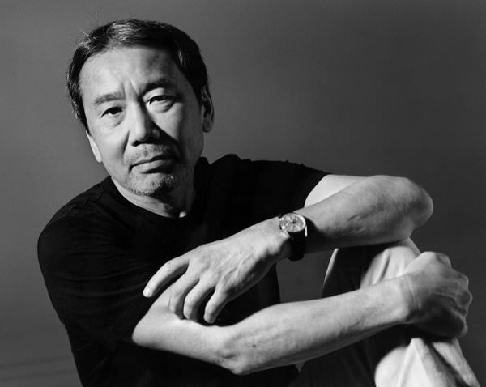

Лев Толстой - російський письменник, один з найвизначніших авторів світової літератури. Його романи "Війна і мир" та "Анна Кареніна" вважаються вершинами реалістичної прози. Толстой глибоко досліджував людську психологію та моральні проблеми суспільства.

Вільям Шекспір - англійський драматург і поет, чиї твори перекладено більш ніж 100 мовами світу. Його п'єси "Гамлет", "Ромео і Джульєтта", "Макбет" залишаються актуальними через віки. Шекспір вплинув на розвиток всієї європейської літератури.

Джейн Остін - англійська письменниця, майстер психологічного роману. Її твори "Гордість і упередження", "Розум і почуття" відображають соціальні реалії Англії XIX століття. Остін досконало описувала людські стосунки та характери.

Стівен Кінг - американський письменник, король жахів. Його книги продалися тиражем понад 350 мільйонів примірників. Відомі твори: "Воно", "Сяйво", "Зелена миля". Кінг має унікальний талант створювати напружену атмосферу та правдоподібних персонажів.

Джоан Роулінг - британська письменниця, авторка серії про Гаррі Поттера. Її книги перетворилися на глобальний феномен і сприяли популяризації читання серед молодого покоління. Роулінг створила цілий всесвіт, який захопив мільйони читачів.

Харукі Муракамі - японський письменник, чиї твори поєднують реалізм із магічним реалізмом. Його романи "Норвезький ліс", "Кафка на пляжі" відомі своєю глибокою філософією та унікальним стилем. Муракамі став одним з найпопулярніших сучасних авторів у світі.